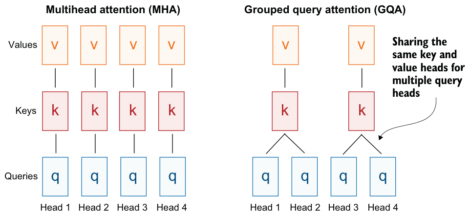

C.3Rotary position embeddings
In transformer-based LLMs, positional encoding is necessary because of the attention mechanism. By default, attention treats the input tokens as if they have no order. In the original GPT architecture, absolute positional embeddings addressed this by adding a learned embedding vector for each position in the sequence, which is then added to the token embeddings.
RoPE (short for rotary position embeddings) uses a different approach: instead of adding position information as separate embeddings, it encodes that information by rotating the query and key vectors in the attention mechanism in a way that depends on each token’s position (the attention mechanism is discussed in the next section). RoPE is an elegant idea, but it is also a large topic in itself. If you’re interested, you can find more information in the original RoPE paper, “RoFormer: Enhanced Transformer with Rotary Position Embedding,” at https://arxiv.org/abs/2104.09864. (RoPE was first introduced in 2021, and it became widely adopted with the release of the original Llama model in 2023. It has since become a staple in modern LLMs, so it is not unique to Qwen3.)
RoPE can be implemented in two mathematically equivalent ways: the interleaved form, which pairs adjacent dimensions for rotation, or the two-halves form, which splits the dimension into cosine and sine halves for convenience. The next listing implements the two-halves variant, which can be easier to read.
import torchdef compute_rope_params(head_dim, theta_base=10_000, context_length=4096,
dtype=torch.float32):
assert head_dim % 2 == 0, "Embedding dimension must be even"
inv_freq = 1.0 / (theta_base ** (
torch.arange(0, head_dim, 2, dtype=dtype)[: (head_dim // 2)].float()
/ head_dim
))
positions = torch.arange(context_length, dtype=dtype)
angles = positions[:, None] * inv_freq[None, :]
angles = torch.cat([angles, angles], dim=1)
cos = torch.cos(angles)
sin = torch.sin(angles)
return cos, sin
def apply_rope(x, cos, sin, offset=0):
batch_size, num_heads, seq_len, head_dim = x.shape
assert head_dim % 2 == 0, "Head dimension must be even"
x1 = x[..., : head_dim // 2] # First half
x2 = x[..., head_dim // 2:] # Second half
cos = cos[offset:offset + seq_len, :].unsqueeze(0).unsqueeze(0)
sin = sin[offset:offset + seq_len, :].unsqueeze(0).unsqueeze(0)
# Shape after: (1, 1, seq_len, head_dim)
rotated = torch.cat((-x2, x1), dim=-1)
x_rotated = (x * cos) + (rotated * sin)
return x_rotated.to(dtype=x.dtype)The RoPE code in listing C.3 will be used in the grouped query attention mechanism discussed in section C.4.
RoPE implementation variants
1) Split-halves style (this book, Hugging Face Transformers):
[ x0 x1 x2 x3 x4 x5 x6 x7 ]
│ │ │ │ │ │ │ │
▼ ▼ ▼ ▼ ▼ ▼ ▼ ▼
cos cos cos cos sin sin sin sin [ cosθ -sinθ 0 0 ... ]
[ sinθ cosθ 0 0 ... ]
[ 0 0 cosθ -sinθ ... ]
[ 0 0 sinθ cosθ ... ] [ x0 x1 x2 x3 x4 x5 x6 x7 ]
│ │ │ │ │ │ │ │
▼ ▼ ▼ ▼ ▼ ▼ ▼ ▼
cos sin cos sin cos sin cos sin [ cosθ -sinθ 0 0 ... ]
[ sinθ cosθ 0 0 ... ]
[ 0 0 cosθ -sinθ ... ]
[ 0 0 sinθ cosθ ... ]C.4Grouped query attention
Grouped query attention (GQA) has become the standard, more compute- and parameter-efficient alternative to the original multihead attention (MHA) mechanism. Unlike MHA, where each head has its own set of keys and values, GQA reduces memory usage by grouping multiple heads to share the same key and value projections, as shown in figure C.5.

The core idea behind GQA is to reduce the number of key and value heads by sharing them across multiple query heads. This both lowers the model’s parameter count and reduces memory bandwidth use for key and value tensors during inference, since fewer keys and values need to be stored and retrieved from the KV cache (discussed in section C.7).
While GQA is primarily a computational efficiency workaround for MHA, ablation studies presented in the original GQA paper, “GQA: Training Generalized Multi-Query Transformer Models from Multi-Head Checkpoints” (https://arxiv.org/abs/2305.13245), show that it performs comparably to standard MHA in LLM modeling performance.
The next listing implements the GQA mechanism with KV cache support.
class GroupedQueryAttention(nn.Module):
def __init__(self, d_in, num_heads, num_kv_groups, head_dim=None,
qk_norm=False, dtype=None):
super().__init__()
assert num_heads % num_kv_groups == 0
self.num_heads = num_heads
self.num_kv_groups = num_kv_groups
self.group_size = num_heads // num_kv_groups
if head_dim is None:
assert d_in % num_heads == 0
head_dim = d_in // num_heads
self.head_dim = head_dim
self.d_out = num_heads * head_dim
self.W_query = nn.Linear(
d_in, self.d_out, bias=False, dtype=dtype
)
self.W_key = nn.Linear(
d_in, num_kv_groups * head_dim, bias=False,dtype=dtype
)
self.W_value = nn.Linear(
d_in, num_kv_groups * head_dim, bias=False, dtype=dtype
)
self.out_proj = nn.Linear(self.d_out, d_in, bias=False, dtype=dtype)
if qk_norm:
self.q_norm = RMSNorm(head_dim, eps=1e-6)
self.k_norm = RMSNorm(head_dim, eps=1e-6)
else:
self.q_norm = self.k_norm = None
def forward(self, x, mask, cos, sin, start_pos=0, cache=None):
b, num_tokens, _ = x.shape queries = self.W_query(x)
keys = self.W_key(x)
values = self.W_value(x)
queries = queries.view(b, num_tokens, self.num_heads,
self.head_dim).transpose(1, 2)
keys_new = keys.view(b, num_tokens, self.num_kv_groups,
self.head_dim).transpose(1, 2)
values_new = values.view(b, num_tokens, self.num_kv_groups,
self.head_dim).transpose(1, 2)
if self.q_norm:
queries = self.q_norm(queries)
if self.k_norm:
keys_new = self.k_norm(keys_new)
queries = apply_rope(queries, cos, sin, offset=start_pos)
keys_new = apply_rope(keys_new, cos, sin, offset=start_pos)
if cache is not None:
prev_k, prev_v = cache
keys = torch.cat([prev_k, keys_new], dim=2)
values = torch.cat([prev_v, values_new], dim=2)
else:
start_pos = 0
keys, values = keys_new, values_new
next_cache = (keys, values)
keys = keys.repeat_interleave(
self.group_size, dim=1
)
values = values.repeat_interleave(
self.group_size, dim=1
)
attn_scores = queries @ keys.transpose(2, 3)
attn_scores = attn_scores.masked_fill(mask, -torch.inf)
attn_weights = torch.softmax(
attn_scores / self.head_dim**0.5, dim=-1
)
context = (attn_weights @ values).transpose(1, 2)
context = context.reshape(b, num_tokens, self.d_out)
return self.out_proj(context), next_cacheYou may have noticed that the GQA mechanism in listing C.4 also includes a qk_norm parameter that is not part of the standard GQA design. When qk_norm=True, the model applies RMSNorm separately to the query and key vectors before computing attention scores. This variant is often called QKNorm because it normalizes the query (Q) and key (K) representations. In other words, QKNorm uses the same RMSNorm operation introduced in section C.1, but applies it inside the attention mechanism rather than as a general normalization layer around the transformer block. In Qwen3, this query/key normalization is used (in addition to the regular RMSNorm layers) to help stabilize the attention scores during training.